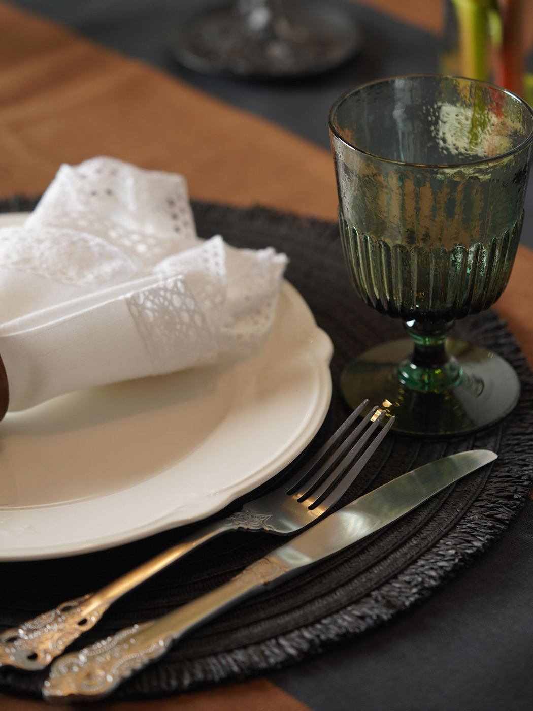

איך עורכים שולחן שמרגיש כמו מסעדה

האוכל הוא הלב של הערב, אבל השולחן הוא הדבר הראשון שהאורחים רואים. לא צריך הרבה כדי שהוא ירגיש כמו מסעדה טובה — צריך בעיקר לבחור נכון, ולדעת מתי לעצור.
מתחילים מהמפה
מפה בצבע חם או כהה — חום, שחור, זית — יוצרת רקע רגוע שהצלחות והאוכל בולטים עליו. אפשר לשלב שני גוונים, למשל מפה כהה וראנר בצבע אדמה לאורך מרכז השולחן. בד עם מעט טקסטורה תמיד נראה טוב יותר מבד מבריק.
צלחות ומפיות
צלחות לבנות הן הבחירה הבטוחה, ושוליים מעוטרים מוסיפים להן מעט אופי. מפית בד מקופלת בפשטות, עם טבעת עץ או חוט, עושה את כל העבודה. מפיות תחרה או רקמה עדינה מוסיפות תחושה ביתית וחמה.
כוסות עם אופי
לא צריך שלוש כוסות לכל סועד. כוס אחת טובה ליין ולמים מספיקה. כוסות בצבע — ירוק עמוק, ענבר — הופכות שולחן לבן ומוכר לשולחן עם זהות, בלי מאמץ.
פרחים: גבוה ודליל, לא נמוך וצפוף
במקום זר אחד גדול במרכז, נסו כמה בקבוקי זכוכית שקופים עם גבעול אחד או שניים בכל אחד, מפוזרים לאורך השולחן. זה נראה אלגנטי, משאיר מקום למגשים, ולא מסתיר את מי שיושב מולכם.
נרות ואור
נרות מקל בגבהים שונים — שחורים, חומים או מפוסלים — יוצרים ריתמוס לאורך השולחן. העדיפו נרות ללא ריח, כדי שלא יתחרו באוכל. ואת האור בחדר כדאי לעמעם מעט: אור חם ונמוך עושה חצי מהאווירה.
הפרטים הקטנים
- כלי קטן עם מלח גס ושמן זית טוב על השולחן.
- מקום פנוי במרכז למגשים ולמנות המשותפות.
- סכו״ם מסודר לפי סדר המנות — מהחוץ פנימה.
ומה לא לעשות
לא להעמיס. שולחן יפה הוא שולחן שיש בו אוויר. אם אתם מתלבטים אם להוסיף עוד משהו — כנראה שלא צריך.